Getting Start
Getting Start では下記のパターンを用意しています。
１．まずはJ-Starに触れてみましょう
２．ローカルモードとサーバーモードの違いを理解しましょう
-------------------------------------------------------------
フォームに入力した名前を次画面で出力してみましょう。
[イメージ図]
form1_1.html
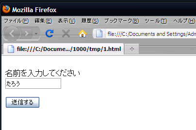
form1_2.html
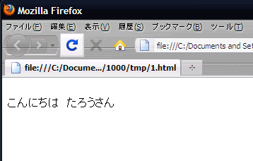
[やり方]
1. まずは、form1_1.htmlを作りましょう。
J-Starを利用するには、form1_1.htmlに以下のjsファイルを読み込みます
jquery-1.5.js
jquery.suziQ.js
j-star.js
jquery.suziQ.settings.js
これらのJSファイル間には依存関係があるため、この順番に読み込んでください。 jquery.suziQ.settings.jsは、J-Star(SuziQ)に対する設定ファイルです。 どのような設定が可能かはこちらを参照してください。
また、このサンプルではjQuery-1.5.jsに依存していますが、別バージョンでも稼動します。
2.form1_1.htmlの<body>タグ内に下記を追加します
今回作成したフォームデータはname=yourNameと指定しています。
またHTMLはすべてUTF-8で記述してください。
<form id="MainForm">
<input id="d" name="yourName"><button id="btn">送信する</button>
</form>
<script type="text/javascript">
var $$ = $.sq; //①
$$.setup = { //②
init: function(data,messages){ //③
$("#btn").sq_norequest({ //④
callback: function(data) { //⑤
$$.ajax.to("form1_2.html",data); //⑥
}
);
}
};
</script>
最初の3行はただのformの定義です。
これより下のscriptタグ内がJ-Starの利用方法になります。まず①で$$という変数を、$.sqで初期化しています。これがSuziQオブジェクトになります。
次に②行目から最後までがsetupオブジェクトの定義です。そして3行目がinit関数の定義になります。 setupオブジェクトのinit関数を定義することによってJ-Starの機能を利用できるようになります。 画面内に関する全ての処理はこのinit関数内で実施してください。
④行目は$("#btn")に対してsq_norequest関数を呼び出しています。 $("#btn")はid属性がbtnという値のHTMLのノード、 つまり今の画面でいうとbuttonタグのノードを表現します。 そしてこのボタンが押下されたときにsq_norequest関数で指定されたcallback関数が実行されるようになります。 （sq_norequestという名前は、ボタンを押下しても別段サーバにアクセスしない、必要ないという意味です） この例では特にサーバの処理が必要ないためsq_norequestを利用しています。
⑤行目でcallback関数が定義されています。sq_norequest関数の引数はフォームのデータです。 6行目ではcallback関数の挙動として、画面遷移を実施しています。 J-Starではjavascript空間を保持したままの画面遷移は$$.ajax.to関数を利用します。 この例ではform1_2.htmlに遷移し、その際にフォームの情報を次画面に引き渡すことが書かれています。
これで送信元ファイルの作成は完了です。
3.gettingStart_main_src2.htmlファイルを作成します
前画面から送信されたdataオブジェクトからyourNameを取り出し、それをid=nameに挿入しています。
遷移前の画面からフォームのデータがやってきてinit関数の第1引数に渡されるので、その値を利用して画面にデータをうめこみます。 ここではjQueryが持っているhtml関数を利用しています。
こんにちは <span id ="name">太郎</span>さん
<script type="text/javascript">
var $$ = $.sq;
$$.setup = {
init: function(data,messages){
$("#name").html(data.yourName); //前画面から送信されたdataオブジェクトのプロパティをid=nameに挿入
}
};
</script>
4.作成が完了しました！実際に動かしてみましょう
[別ページで表示]
-------------------------------------------------------------
複数の入力データがある場合、一括エクスポートが可能です
[イメージ図]
form1_1.html
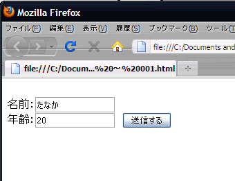
↓
form1_2.html
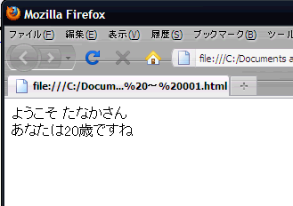
[やり方]
1. 以下のjsファイルを宣言します
jquery-1.5.js
jquery.suziQ.js
jquery.suziQ.settings.js
j-star.js
2.forms.htmlの<body>タグ内に下記を追加します
さきほど作成したファイルに追加して、年齢を送信できるようにしましょう。
これで送信元ファイルはこうなります。
<form id="MainForm"> 名前：<input id="d" name="yourName"> 年齢：<input id="d" name="yourYear"> <button id="btn">送信する</button> </form>
<script type="text/javascript"> var $$ = $.sq; $$.setup = { init: function(data,messages){ $("#btn").sq_norequest({ callback: function(data) { $$.ajax.to("form1_2.html",data); } }); } }; </script>
先ほどのHTMLと比べて変更された部分は、新しい年齢用のinputタグが追加された程度で javascript部分は遷移先URL以外何も変更されていません。 これは、sq_norequestやsq_post系を使用する場合、J-Starがフォーム情報を自動で収集してくれるためです。
3.gettingStart_main_src4.htmlファイルを作成します
では次に遷移先画面を作ります。これも先ほど作った画面を利用します。
ようこそ <span name ="yourName">一括インポートVer</span>さん あなたは <span name ="yourYear">999</span>歳ですね
<script type="text/javascript"> $$ = $.sq; $$.setup = { init: function(data,messages){ $("span").fill(data); } }; </script>
先ほどのHTMLと比べて変更された部分は、年齢用の文言とinit関数内になっています。
先ほどのHTMLではjQueryのhtml関数を利用していました。 もちろんここでもjQueryのhtml関数を使用しても構いませんが複数のデータを扱うための便利な関数としてfillという関数をSuziQが提供しています。 この関数ではオブジェクトのキーとname属性が一致するノード全てにデータを書き込みます。
4.入力チェックを行ってみましょう。
このままでも動きますが、せっかくなので入力チェックを行ってみましょう。
名前に対しては必須チェックをいれ、年齢に対しては必須チェックと文字種チェックを行うことにします。
まず、入力チェックエラー時に赤く表示させるためにJ-Starが提供しているCSSを読み込んでおきましょう。
j-star.css
そして、以下のように遷移元HTMLを修正します。
<form id="MainForm"> 名前：<input id="d" name="yourName"> 年齢：<input id="d" name="yourYear"> <button id="btn">送信する</button> </form>
<script type="text/javascript"> var $$ = $.sq; $$.setup = { messages: ["../../../js/j-star/message"], //① init: function(data,messages){ $("[name=yourName]").validate({require:true}).valid_message("valid.req",["名前"]); //② $("[name=yourYear]").validate({require:true,ch:"d"}).valid_message("valid.req.def",["年齢","valid.char.n"]); $("#btn").sq_norequest({ callback: function(data) { $$.ajax.to("form1_2.html",data); } }); } }; </script>
①でsetupオブジェクトにmessagesを設定しています。
これは入力チェックエラー時の表示するメッセージを利用するために設定しています
（もし完全に独自メッセージを利用する場合はこれは不要です）。
次に②では、名前の入力欄に入力チェックを設定しています。
validate({require:true})で必須チェックを設定しています。
そしてvalid_message("valid.req",["名前"])ではエラー時のメッセージを設定しています。
valid_messageの第1引数がmessagesオブジェクトのキーである場合、messagesオブジェクトの値が利用されます。
今、messagesオブジェクトは ../../../js/j-star/message で指定されたJSファイルが利用されますので、
valid.reqの値は「{0}は必須です。」になっています。
valid_messageの第2引数が「{0}」などに入る値の設定です。今「名前」という値を指定しているので
エラーメッセージは「名前は必須です。」になります。
5.作成が完了しました！実際に動かしてみましょう
[別ページで表示]
-------------------------------------------------------------
さきほどまでのサンプルでは、サーバにアクセスしない例でしたが、 今度はサーバにアクセスする例を作成してみましょう。
3つのモードで見たとおりJ-Starは動作モードとして3つのモードを持っています。 このうちのローカルモードとサーバーモードを、簡単なアプリケーションを作成することで確かめてみましょう。
入力した名前が末尾に登録されていくアプリケーションです
[イメージ図]
top.html
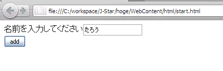
↓
next.html
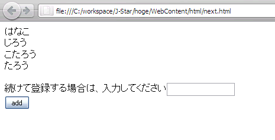
IDE上で新規動的Webプロジェクト[JStar]と、対応する[JStarEAR]を作成します。 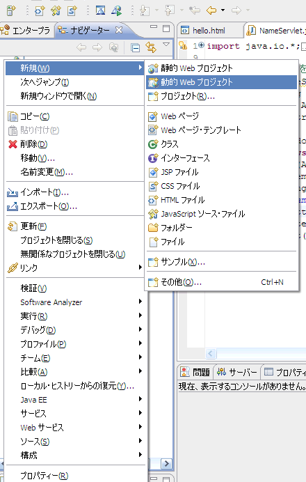
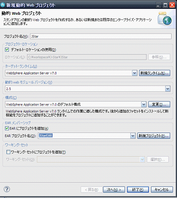
JStarプロジェクトWebContentフォルダ直下にjsフォルダを作成し、以下のファイルをインポートします。
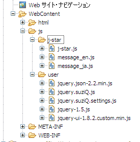
これで準備は完了です。まずはローカルモードの実装をしてみましょう。
ローカルモードで実装が必要なものは、HTML、処理を行うjsファイルです。
WebContent/htmlフォルダに遷移元・遷移先HTMLを作成します。
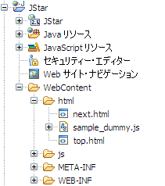
suziQオブジェクトのセットアップオブジェクトのinit関数のurlオブジェクトに、 処理を紐付けるURLを記述します。コンテキストルートから記述することに注意してください。
遷移元HTML:top.html
<html>
<head>
<meta http-equiv="Content-Type" content="text/html; charset=UTF-8">
<script type='text/javascript' src='../js/user/jquery-1.5.js'></script>
<script type='text/javascript' src='../js/user/jquery.suziQ.js'></script>
<script type='text/javascript' src='../js/j-star/j-star.js'></script>
<script type='text/javascript' src='../js/user/jquery.suziQ.settings.js'></script>
<script type='text/javascript' src='../js/user/jquery-ui-1.8.2.custom.min.js'></script>
<script type='text/javascript' src='../js/user/jquery.json-2.2.min.js'></script>
<script type='text/javascript' src='sample_dummy.js' ></script>
</head>
<body>
<form id="MainForm">
名前を入力してください<input type="text"name="name1">
<input type="submit" name="submit" value="add">
</form>
<script type="text/javascript">
var $$ = $.sq;
$$.setup = {
init: function(data,messages){
$("[name=submit]").sq_post({ //urlに紐づく処理を実行するためsq_post関数を定義
url: "/JStar/Insert.json", //URLを指定
data: data,
callback: function(result,req){
if(result.result=="ok"){
$$.ajax.to("next.html",result);
}
}
});
}
};
</script>
</body>
</html>
[説明]J-StarではSuziQオブジェクトを利用します。SuziQオブジェクトは簡易のため $$ で表されます。J-Starで最も重要なsetupオブジェクトを定義しています。 このsetupオブジェクトで定義したinit関数が実行されJ-Starが機能します。
今回はボタンが押されたときにサーバーにデーターをPOSTする処理を実行したいので sq_post関数を定義します。 サーバーでの処理が必要ない場合はsq_norequest関数を定義します（今はローカルモードなのでサーバーへのPOST処理は行われません。 サーバーモードで動かした場合を考えて使用する関数を決めてください）
sq_postの中では3つのオブジェクトを定義しています。
遷移先HTML:next.html
<html>
<head>
<meta http-equiv="Content-Type" content="text/html; charset=UTF-8">
<script type='text/javascript' src='../js/user/jquery-1.5.js'></script>
<script type='text/javascript' src='../js/user/jquery.suziQ.js'></script>
<script type='text/javascript' src='../js/j-star/j-star.js'></script>
<script type='text/javascript' src='../js/user/jquery.suziQ.settings.js'></script>
<script type='text/javascript' src='../js/user/jquery-ui-1.8.2.custom.min.js'></script>
<script type='text/javascript' src='../js/user/jquery.json-2.2.min.js'></script>
<script type='text/javascript' src='sample_dummy.js' ></script>
</head>
<body>
<span id ="name"></span>
<form id="MainForm">続けて登録する場合は、入力してください<input type="text"name="name1">
<input type="submit" name="submit" value="add">
</form>
<script type="text/javascript">
var $$ = $.sq;
$$.setup = {
init: function(data,messages){
$("#name").html(data.name_list); //取得したdataオブジェクトのname_listプロパティ値をid=nameに挿入
$("[name=submit]").sq_post({
url: "/JStar/Insert.json",
data: data,
callback: function(result,req){
if(result.result=="ok"){
$$.ajax.to("next.html",result);
}
}
});
}
};
</script>
</body>
</html>
[説明]遷移元HTMLと同じように、セットアップオブジェクトを定義しています。 init関数の中で$("#name").html()関数を用いてタグに登録された名前一覧を表示しています。
sq_post関数は遷移元HTMLと同じ処理を行っています。
任意のjsファイルに処理を記述します。今回はWebContent/htmlフォルダ内のsample_dummy.jsに記述します。
var name_list = jQuery.sq.cookie("name_list");
jQuery.sq.ajax.mock["/JStar/Insert.json"]=function(req){
if(name_list==null){name_list=new Array()}
name_list[name_list.length]= req.name1; //セッションで保持しているname_listに入力値を連結します
return {result:"ok",name_list: name_list};
};
[説明]セッションに"name_list"を保持し、入力された値をそこに追加しています。今回はresultで常にOKを代入していますが、処理を振り分けることも可能です。
作成が完了しました！top.htmlを表示し動かしてみましょう。
[別ページで表示]
このように、サーバのアクセスを代替するmockを自由に書き換えることにより、
あたかもサーバが存在するかのような挙動をとらせることができます。
今度はサーバーモードを実装してみましょう。ローカルモードで使用したhtmlをそのままサーバーモードで使用します。
JStarではデフォルトではJSON方式でデータをやり取りするため、JSON操作APIライブラリであるJSONICを利用します。
※これは必須ではありません。他の方式でデータを扱うことも、他のJSON操作APIライブラリを使用することも可能です。
JStarEARにlibフォルダを作成し、[jsonic.jar]をインポートします。
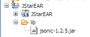
HttpServletを継承したNameServlet.javaをソースフォルダに作成します。
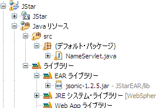
NameServlet.java
import java.io.IOException;
import java.io.PrintWriter;
import javax.servlet.ServletException;
import javax.servlet.http.HttpServlet;
import javax.servlet.http.HttpServletRequest;
import javax.servlet.http.HttpServletResponse;
import net.arnx.jsonic.JSON;
public class NameServlet extends HttpServlet { //HttpServletを継承
static String name_list = "";
static class Property { //staticインナークラスを定義
public String name1;
}
public void doPost(HttpServletRequest req, HttpServletResponse res)
throws ServletException, IOException {
Property property = (Property) JSON.decode(req.getInputStream(), Property.class); //JSONを利用して情報を取得
String userName = property.name1; //定義したインナークラスのプロパティに値が格納される
name_list = name_list + userName + "<br>";
PrintWriter out = res.getWriter();
out.print("{result:'ok',name_list:name_list}"); //java.io.PrintWriterクラスを利用してデータを渡す
}
}
[説明]J-StarではJSON.decodeメソッドをつかって、定義したインナークラスのプロパティに値をセットします。 また、java.io.PrintWriterクラスを利用してデータを渡します。
作成したNameServlet.java をweb.xmlに登録します。
web.xml
<?xml version="1.0" encoding="UTF-8"?>
<web-app id="WebApp_ID" version="2.5" xmlns="http://java.sun.com/xml/ns/javaee" xmlns:xsi="http://www.w3.org/2001/XMLSchema-instance" xsi:schemaLocation="http://java.sun.com/xml/ns/javaee http://java.sun.com/xml/ns/javaee/web-app_2_5.xsd">
<display-name>JStar</display-name>
<servlet>
<servlet-name>servletName</servlet-name>
<servlet-class>NameServlet</servlet-class>
</servlet>
<servlet-mapping>
<servlet-name>servletName</servlet-name>
<url-pattern>/JStar/Insert.json</url-pattern>
</servlet-mapping>
</web-app>
[説明]通常のStrutsでの記述方法と同じです。web.xmlの
これで作成が完了しました。サーバーにJStarEARを追加して起動してから
http://localhost:9081/JStar/html/top.htmlをクリックしてください。
※ポート番号は環境に合わせて適宜修正してください
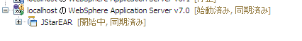
このように現在のHTMLのプロトコルが「file:」になっているか「http:」になっているか
（HTMLファイルをダブルクリックなどで立ち上げたか、サーバーで起動させたか）
で、モードが切り替わることが確認できました！